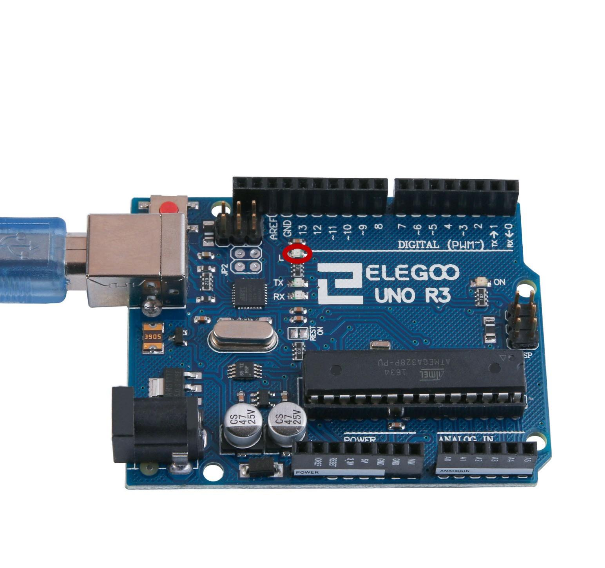
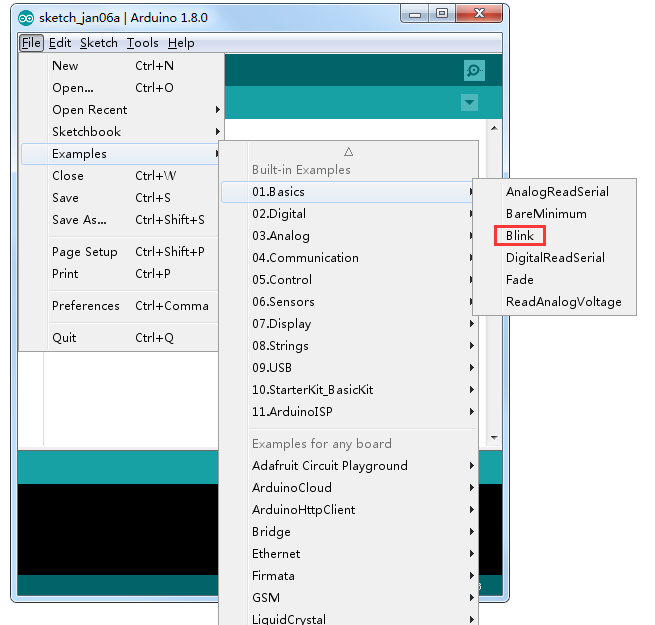
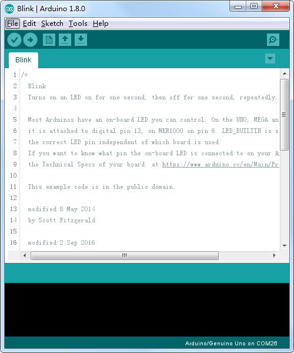
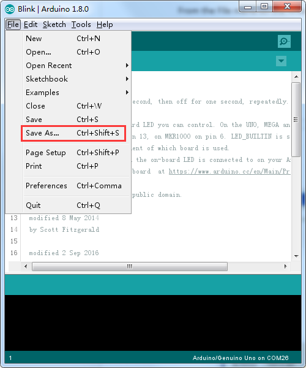
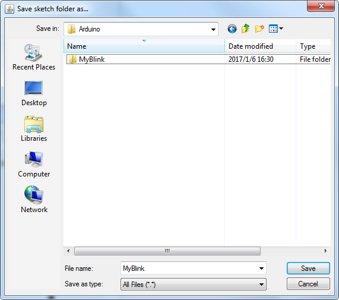
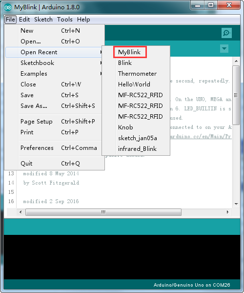
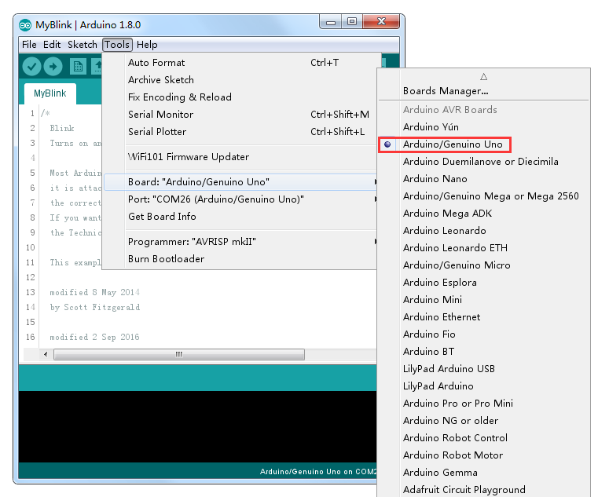
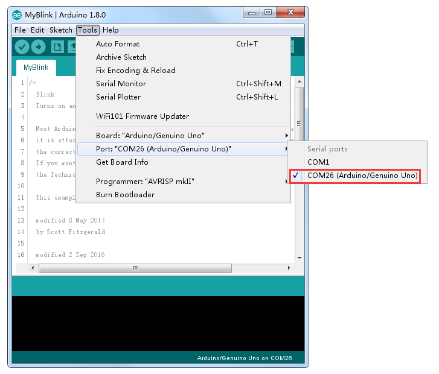
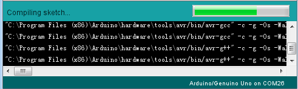
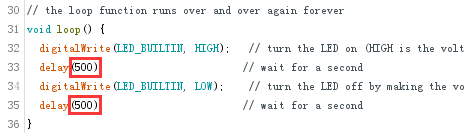

En esta lección, aprenderemos a cómo programar el tablero de regulador Arduino para hacer parpadear el LED integrado de la placa y cómo descargar programas pasos básicos.
(1) x Elegoo Uno R3
La placa de UNO R3 tiene unas filas de conectores a ambos lados que se utilizan para conectar varios dispositivos electrónicos y plug-in 'escudos' que amplían su capacidad. También tiene un indicador luminoso que podemos controlar. Este LED está construido sobre el tablero de UNO R3 y se refiere a menudo como la 'L' LED ya que es como se indica en el tablero.

Podemos encontrar que la 'L' de la placa UNO R3 LED parpadea cuando se conecta a un
enchufe del USB. Esto es porque las placas se envían generalmente con el programa de 'Blink'
pre-instalado. Puede suceder que no lo tengan pre-instalado.
En esta lección, vamos a reprogramar el tablero UNO R3 con nuestro propio directorio de
Blink y luego cambiar la tasa a la que parpadea.
El IDE de Arduino incluye una gran colección de programas de ejemplo que se pueden cargar y usar.
Esto incluye un directorio de ejemplo para hacer el parpadeo del LED de 'L'.
Cargar el sketch de 'Blink' que encontrarás en el sistema de menús del IDE bajo archivo >
ejemplos > 01 conceptos básicos > Blink.

Se cargara el programa mostrando el script correspondiente, como se muestra en la imagen.

Los scripts de ejemplo incluidos con el IDE de Arduino son de sólo lectura. Es decir,
puedes subirlos a la placa de UNO R3, pero si se cambia el contenido del script, no se puede guardar
como el archivo mismo (sobreescribirlo).
Puesto que vamos a cambiar este script, lo primero que tienes que hacer crear una copia para
poder manipularla sin problemas.
En el menú archivo en el IDE de Arduino, seleccione 'Guardar como.' y guarde el dibujo con
el nombre 'MyBlink'


Una vez guardado, si alguna vez queremos encontrar otra vez nuestro script, podemos simplemente abrir usando yendo a archivo > Open recent y buscando en la lista el nombre de nuestro archivo.

Conectamos la placa de Arduino al ordenador con el cable USB y compruebe que la Board Type y Puerto serie están ajustados correctamente.


El tipo de tarjeta y puerto Serial aquí no son necesariamente la misma que se muestra en la imagen. Si usas 2560, entonces usted tendrá que elegir Mega 2560 como el tipo de Junta, otras opciones se pueden hacer de la misma manera. Y el puerto Serial para todo el mundo es diferente, a pesar de COM 26 elegido aquí, sería COM3 o COM4 en su ordenador. Un puerto COM correcto se supone que es COMX (arduino XXX), que es por los criterios de certificación.
Hacemos clic en el botón Subir. El segundo botón de la izquierda en la barra de herramientas.
Si vemos el área de estado del IDE, veremos una barra de progreso y una serie de mensajes. Al principio, que dice 'Compilando script...'. Esto convierte el script en un formato adecuado para subir a la placa.

La primera línea de código es:
int led = 13;
Como explica el comentario sobre ella, se le esta dando un nombre al pin que el LED está conectado. Este pin es el numero 13 y es ese pin en la mayoría de modelos de arduinos. A continuación, tenemos la función de configuración. Otra vez, como dice el comentario, este se ejecuta cuando se presiona el botón de reset. También se ejecuta cada vez que la Junta se reinicia por alguna razón, como poder primero se aplica a él, o después de un bosquejo se ha subido
void setup( ) {
pinMode(led, OUTPUT); // Inicializa el pin digital como salida.
}
Cada script Arduino debe tener una función de configuración, y el lugar donde van
las instrucciones es dentro de las llaves { y }.
En este caso, es un comando, que, como dice el comentario dice la placa Arduino que vamos
a utilizar el pin LED como salida.
La función loop, después que haya terminado de ejecutar sus comandos, empezar inmediatamente otra vez.
void loop( ) {
digitalWrite(led, HIGH); // Encienda el LED (alto es el nivel de voltaje)
delay(1000); // Espere un segundo
digitalWrite(led, LOW); // Apagar el LED por lo que la tensión baja
delay(1000); // Espere un segundo
}
Dentro de la función de bucle, los comandos en primer lugar activar el pin del LED (alto),
esperan un retraso de 1000 milisegundos (1 segundo), para a continuación apagar el LED y
esperar otro segundo antes de volver a empezar el bucle.
Ahora como ejemplo vamos a ver que debemos cambiar para la transición ente el encendido y
el apagado sea mas rápido. ¿Se te ocurre cómo? Eso es!, cambiando el delay.

En el ejemplo de la imagen, hemos conseguido que el tiempo de retardo sea la mitad (500 milisegundos) por lo que con este mismo principio podemos acelerar o retrasar la transición entre el encendido y apagado.
Volver al índice